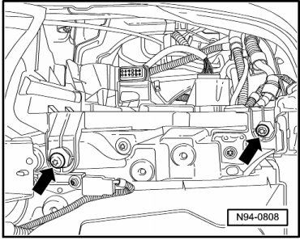
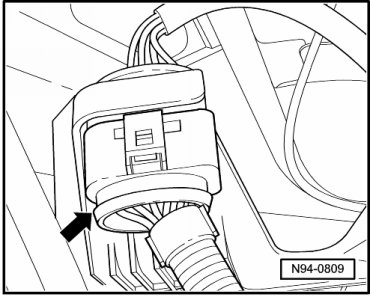
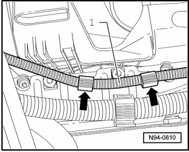
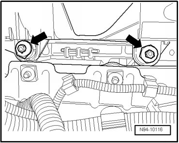

Headlamp Mount, through 11.06
Headlamp Mount, through 11.06
Special tools, testers and auxiliary items required
• Torque Wrench (V.A.G 1331/)
• The illustration shows the removal of the left headlamp mount. The same procedure is used to remove the right headlamp mount.
Removing
- Switch off ignition, switch off all electrical consumers and remove ignition key.
- Remove headlamp --> [ Headlamps, through 11.06 ] Headlamps, through 11.06.
Right Headlamp Only
- Remove the air filter housing
- Move the lock carrier to the service position --> Body Exterior 50 Description and Operation. Radiator Support
- Remove screws - arrows -.

- Disconnect connector - arrow -, at rear side of headlamp mount.

- Loosen line - 1 - out of line guides - arrows - and press it downward.

- Remove screws - arrows -.

- Remove headlamp mount.
Installing
Install in reverse order of removal, noting the following:
- Tighten the bolts - arrows - on the headlamp mount to the specification --> [ Front Lamps ] [1][2]Headlamp.
- Tighten the bolts - arrows - on the tail lamp mount to the specification --> [ Front Lamps ] [1][2]Headlamp.
- Check installation position of headlamp for uniform gap dimensions.
If headlamp has an uneven gap dimension to the body, installation position must be corrected --> [ Headlamps Correcting Installation Position ] Procedures.
- Check headlamp for function.
• If headlamp mount is removed, headlamp must always be adjusted after installation.
- Check and adjust headlamp aim if necessary.